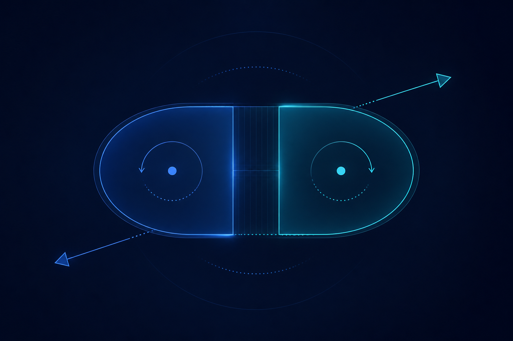

Стратегический
- цель - каким я хочу стать;
- направление и вектор;
- уровень причины всей дальнейшей деятельности;
- ожидающий фактор.
Я 8 лет строю под себя системы. Сотни итераций. Сейчас с AI+MCP это стало работать.
Я пришёл к двум трекам, которые должны идти одновременно: стратегический держит смысл и направление, тактический доводит это до ежедневного применения.

Одна стратегия без дисциплины применения остаётся нереализованной мечтой, потому что инерция сознания саботирует воплощение.
Применение без смысла и связи с собой за пару спринтов превращается в мучение и самобичевание.
Только вместе получается баланс: стратегический фокус во главе и доведение до желательных результатов ежедневно.